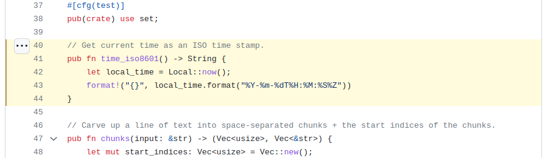
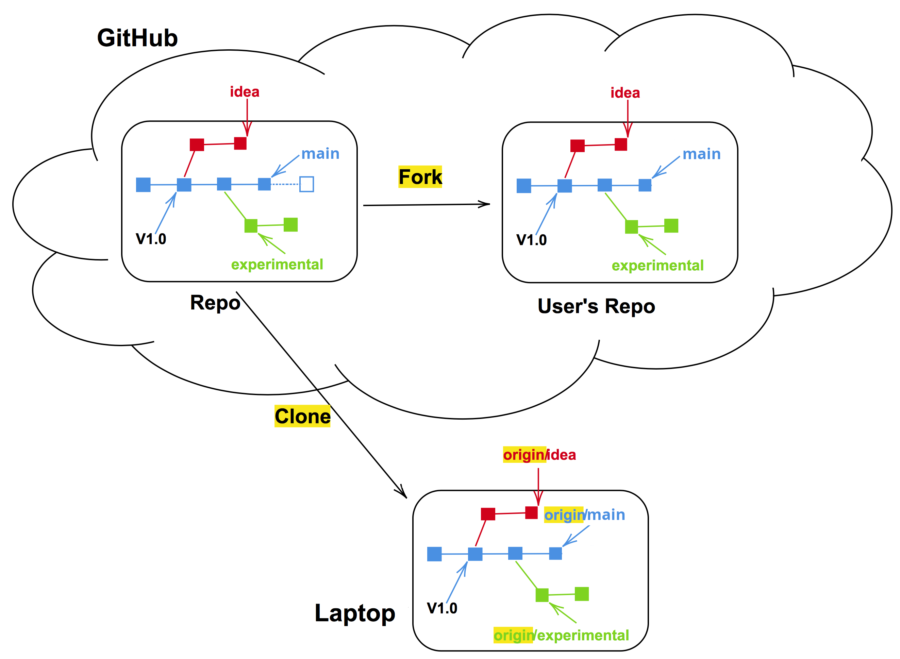
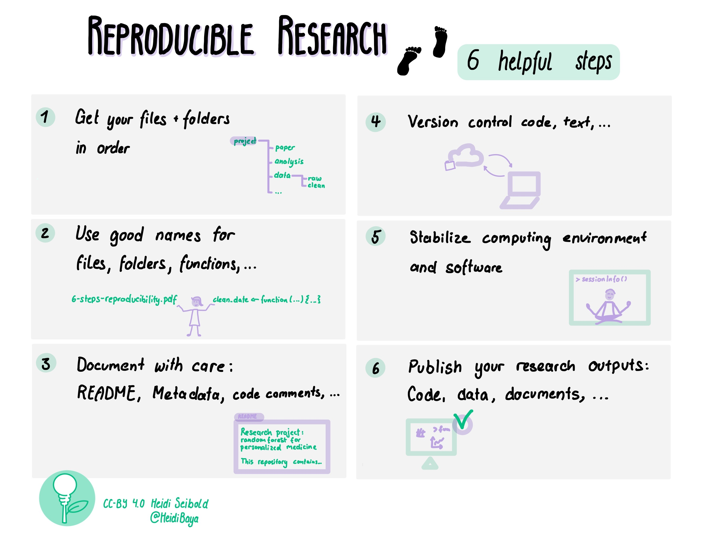
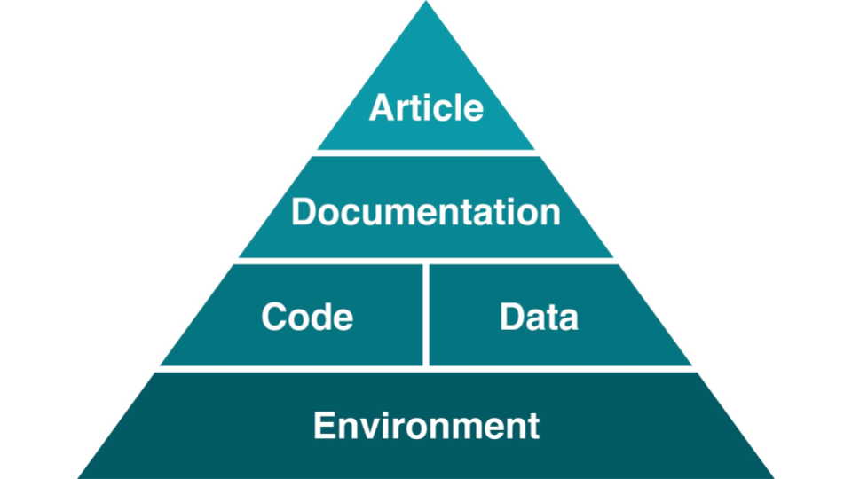
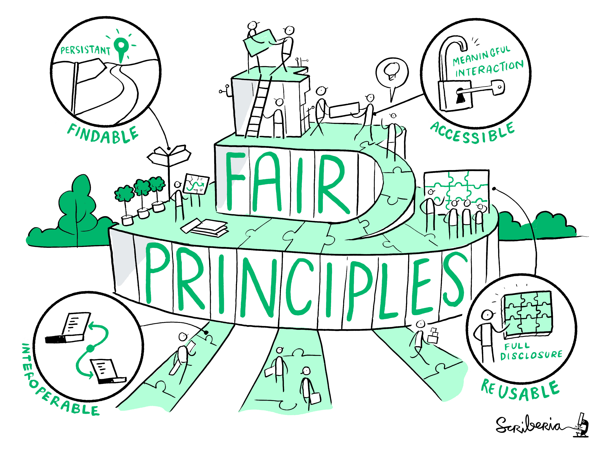

CodeRefinery in a day
This course provides an introduction to essential practices in research software engineering, with a strong focus on collaboration, reproducibility, and sustainability. Participants will learn the fundamentals of version control and how to effectively collaborate on texts in GitHub. The course also explores key concepts in reproducible research, including organizing projects, a brief overview of environments and containers. In addition, it covers the social aspects of coding, such as software licensing, citation, and open collaboration. By the end, learners will know about best practices for developing and sharing research software more efficiently and transparently.
This course is a condensed version of the CodeRefinery workshop
Prerequisites
To follow the course, you will need a GitHub account: Instructions
Why is this important?
When in doubt if what you are doing is important in research, always reflect using the Allea European Code of Conduct for Research Integrity (2023)

The four Allea principles are:
Reliability in ensuring the quality of research, reflected in the design, methodology, analysis, and use of resources.
Honesty in developing, undertaking, reviewing, reporting, and communicating research in a transparent, fair, full, and unbiased way.
Respect for colleagues, research participants, research subjects, society, ecosystems, cultural heritage, and the environment.
Accountability for the research from idea to publication, for its management and organisation, for training, supervision, and mentoring, and for its wider societal impacts.
Transparency and accountability from idea to publication are fundamental requirements of reproducible research. What we will cover in this course are all the necessary steps needed so that the computational/methodological/digital part of the research work is done transparently and allows others to verify and reproduce it.
However, we are not just doing this to follow research integrity principles, we are also doing this to improve how we work with other collaborators, and especially we do this to help our future self so that it can always be possible to travel back in time and see what was done at a certain part of the research process.

(Source)
Schedule
9:15-09:25 |
|
9:25-9:30 |
Intro (this page) |
9:30-9:40 |
|
9:40-10:20 |
|
9:55-10:05 |
Break |
10:05-10:20 |
|
10:20-10:25 |
|
10:25-11:00 |
|
11:00-12:15 |
Lunch break |
12:15-12:30 |
|
12:30-13:00 |
Demo - How PRs look, code review and merge, issue linking, history, branch naming |
13:00-13:10 |
Break |
13:20-13:25 |
|
13:25-13:45 |
|
13:45-14:00 |
|
14:00-14:10 |
Break |
14:10-14:20 |
|
14:20-14:35 |
|
14:35-14:45 |
|
14:45-14:55 |
|
14:55-15:00 |
Getting ready for this course
Get to know a texteditor of your choice
Every computer likely has some basic text editor installed. Notepad/Muistio (Windows — “Muistio” is the Finnish name for the same built-in app), TextEdit (Mac), gedit (Linux) or something along those lines.
There also exist various command line editors, like nano, vim and emacs. The choice is up to you, the only important thing is that you can save a plain text file (e.g. .txt extension) with it. Also other tools like Word, LibreOffice, Google docs can do this. Though we recommend to get familiar with something simpler.
For now it is enough to know how to open your editor of choice, edit a file and save it with .txt extension.
VS Code and VSCodium
For a more feature-rich editing experience, you can also install one of these popular editors:
Visual Studio Code (VSCode) — A powerful, free source code editor by Microsoft, widely used in research and software development. Supports syntax highlighting, extensions, Git integration, and a built-in terminal.
VSCodium — A community-maintained binary distribution of the same VS Code source code, but without Microsoft’s telemetry and proprietary components. It uses an open-source extension marketplace (Open VSX). Choose VSCodium if you prefer not to share usage data with Microsoft.
Both work identically for the purposes of this course.
GitHub account
In this course, we use the public GitHub service and you need an account at https://github.com and a supported web browser. Basic GitHub accounts are free.
If you are concerned about the personal information to reveal to GitHub, for example how to keep your email address private, please review these instructions for keeping your email address private provided at GitHub.
We are trying to make it possible to follow this course also with other Git hosting services but this is work in progress.
Create a GitHub account
Go to https://github.com.
Click on the “Sign up” at the right-top corner.
Enter your username of your choice (if it is already used, you will get some suggestions), email address, and password.
Follow further instruction and verify your account.
GitHub may require you to enable multi-factor authentication (MFA). This is generally a good thing, but may take some time to set up. Luckily, you probably don’t have to do this immediately. If you are prompted to enable MFA before the end of the course, follow GitHub’s instructions since they are usually pretty good.
How to verify that this worked
If you can log in to https://github.com, you should be good to go.
Introduction to version control
Objectives
Explain why version control can be useful.
Get an overview of the GitHub webinterface
Apply basic Git workflows through the GitHub webinterface.
These materials is adopted from CodeRefinery lesson “Introduction to version control” with focus on working online with GitHub.
It is normal, that all the new terms and concepts may be overwhelming. Take it as a starting point, and come back when you want to try something new. You may not have use for these tools yourself, but good to know anyway to potentially forward researchers.
Version control is the practice of tracking and managing changes over time.
You can think of version control like regularly taking a photo (“snapshot”) of your work.
Why is version control relevant for data stewards?
You may not write code yourself, but as a data steward, you may:
Review research software or repositories linked in a data management plan
Advise on reproducibility and transparency
Help researchers choose appropriate platforms
Interpret repository structure, history, and licensing
This lesson gives you the vocabulary and mental model needed for those tasks.
Why do we need to keep track of versions?
Problem: If you have to identify and find your code from 17 days ago, can you?
Version control is an answer to the following questions (do you recognize some of them?):
“It broke … hopefully I have a working version somewhere?”
“Can you please send me the latest version?”
“Where is the latest version?”
“Which version are you using?”
“Which version have the authors used in the paper I am trying to reproduce?”
“Found a bug! Since when was it there?”
“I am sure it used to work. When did it change?”
“My laptop is gone. Is my thesis now gone?”
Features: roll-back, branching, merging, collaboration
Problem: Your code worked two days ago, but is giving an error now. You don’t know what you changed.
Problem: You and your colleague want to work on the same code at the same time.
Roll-back: you can always go back to a previous version and compare
Branching and merging:
Work on different ideas at the same time
Different people can work on the same code/project without interfering
You can experiment with an idea and discard it if it turns out to be a bad idea

Image created using https://gopherize.me/ (inspiration).
Collaboration: review, compare, share, discuss
With version control we can annotate code (browse this example online):

Example of a git-annotated code with code and history side-by-side.
Talking about code, showing someone your code
“Clone the code, go to the file ‘src/util.rs’, and search for ‘time_iso8601’”. Oh! But make sure you use the version from August 2023.”
Or I can send you a permalink:

Permalink that points to a code portion.
Terminology: Git repositories - a place to store
“A repository is the most basic element of GitHub. It’s a place where you can store your code, your files, and each file’s revision history. Repositories can be owned by persons or organisations, have multiple collaborators and can be either public or private”
Adapted from GitHub documentation
“Locally, a git repository is the .git folder inside a project. This repository tracks all changes made to files in your project, building a history over time. Meaning, if you delete the .git local folder, then you delete your local project’s history.”
Adapted from GitKraken(https://www.gitkraken.com/learn/git/tutorials/what-is-a-git-repository)
Demo - exploring a repository online
Exercise
Let’s browse the numpy repository on GitHub.
Numpy is a popular Python package used in almost all research code. It has a large community of contributors.
Check out the main page: Source code, README, LICENSE
Check who contributed
Explore differeent branches
Take a look at the history
See the different commit messages
Note that you can clone the repository
Consider:
What signals project maturity?
Where would you look for licensing or contribution rules?
How easy would this be to cite or reuse?
Terminology: Commit
“A commit is a snapshot of current state of your repository … like taking a picture with metadata”
Commits include information, such as
Who changed/created something?
What was changed/created?
When was it changed/created?
In addition we can (should!) provide information on:
Why was it changed/created? -> This information we have to provide in the commit message!
-> Commit messages make the history that we can browse.
Terminology: Clone - download
Cloning is a way to get the latest version of a repository to your computer.
Cloning also includes the history and is therefore preferred over “pure” download or copy/paste of content.
Terminology: Git vs GitHub
Git is a tool/format for version control. It can be used via the terminal or be inbuilt to integrated development environments (IDE) like VSCode, RStudio, Jupyter. Alternative tools are for example Subversion,Mercurial, or Pijul.
GitHub is a hosting service for Git repositories with web interface. It is one place to find the source of software, webpages, presentations, books, games, and a place to collaborate and share. Alternative services for example GitLab and Codeberg.
What we typically like to version control
Software (this is how it started, but Git/GitHub can track a lot more)
Scripts
Documents (plain text files are much better suitable than Word documents)
Manuscripts (Git is great for collaborating/sharing LaTeX or Quarto manuscripts)
Configuration files
Website sources
Data (though there are better options available!)
Do not use git for:
Secrets
Passwords
Binaries (e.g.
.exefiles)Files generated from builds that can be regenerated from source
Difficulties of version control
Despite the benefits, let’s be honest, there are some difficulties:
One more thing to learn (it’s probably worth it and as a researcher, it will save more time in the long run; basic career skill).
Difficult if your collaborators don’t want to use it (in the worst case, one can still use version control on ones own side and email versions to collaborators).
Advanced things can be difficult, but basics are often enough; and most questions and solutions are being discussed online.
Why git and not any of the other tools?
Easy to set up: no server needed.
Very popular: chances are high that if you want to contribute to somebody else’s code, it is tracked with Git.
Distributed: good backup, no single point of failure, you can track and clean-up changes offline, simplifies collaboration model for open-source projects.
Important platforms such as GitHub, GitLab, and Bitbucket build on top of Git.
Note that many organisations have their own In-house GitLab: This lets you host your own repositories safely within the walls of your organisation.
For collaboration in the Nordics we have the Nordic GitLab hosted by DeIC, hosted on servers in Denmark.
Exercise: Our first repository
Exercise
Let’s create our first online repository! We pretend to be a researcher writing some code on their own computer who now wants to collaborate with others and use GitHub for it. This is a beginner scenario, avoiding separate tools and use of command line.
Create a plain text file on your computer, using a text editor of your choice.
Fill it with some (random) text.
Save the file (somewhere) on your computer, call it
random.txt.Now we open github.com and log in.
To deposit our text file, we first need to create a repository.
5.1 Click the plus button top right of the GitHub page > New repository.

The “create repository” interface on GitHub.
5.2 In the form:
Set your own username as the owner
Choose a repository name, needs to be unique for your namespace
Add a short description of what this repository is for
Choose if you would like the repository to be public or private. If you can, always choose public, though you can also change that later.
We will not be using any template, though they can be super useful for similar projects
We want to add a README, so let’s turn that switch to on.
We do not need a .gitignore at this point. This is important when you work locally and want to exclude some of your local files from being tracked
And it is good practice to right away add a license, e.g. CC0, Creative Commons Zero.
Then click create repository.
We have now created an empty repository!

An empty repository after creation.
Now upload the text file, that we created earlier
Find the plus (“add file”) button next to the bigger green “code” button in your repository
Click “upload files”

Adding a file to the repository on GitHub.
After drag and dropping or finding your file from your computer, we need to
commitit to the repositoryFor that write a short commit message that tells why you added the file. You can, but don’t have to, add an extended description
We choose “commit directly to the main branch”
And “commit changes”.
You now have created your own repository and added a file! You can explore the history to observe your progress.
The link to your own public (!) repository is your post-day 4 assignment which needs to be submitted via moodle.
Exercise: Editing files online
Exercise
Let’s now use the GitHub web interface to edit a file that is already there. This can be very handy when you just want to edit something small in one file. For larger edits, you may want to move away from the GitHub webinterface. Though, GitHub these days also provides online editors (github.dev). We will only look at editing single files in this course.
In your repositories main page
github.com, find theREADME.mdfile and click it.Now find the edit button, the pen symbol on top right of the README.md page.
Edit the text in your README.md; you can for example write that this repository is part of an exercise in the Data Steward training.
Safe your edits. Observe how it is the same procedure as when uploading a new file asking about branch and for a commit message.
We are now able to edit files online in a repository that belongs to us!
Working with my own GitHub repository
… on GitHub (see also exercise above!)
Work on single files, and one at a time …
Commit when done: take snapshots of units of work (one file at a time)
Working on GitHub can be useful for small edits, like fixing a typo or changes that relate to a single file.
… locally
When you want to edit multiple files and work on your own computer with an editor of youre choice:
Clone: get a copy of the content (with metadata and history) to my computer
Work on it using any editor, make updates, add files, remove files, …
git add and git commit: take snapshots of units of work (can be changes in one or many files)
Push: submit snapshots to GitHub, so that others can see
When you get back to it later: Instead of clone, you git pull: Get latest version from GitHub
See also next lesson.
Keypoints
Version control supports data provenance by recording who changed what, when, and why.
Commits act as documentation by capturing meaningful, traceable changes to data, code, or metadata.
Git history enables accountability and recovery by allowing comparison, auditing, and safe rollback of changes.
Various usage scenarios exist.
Using git to collaborate
Objectives
Explain how collaborative version control works in general.
Apply basic GitHub collaboration workflows using issues and pull requests.
These materials are adopted from CodeRefinery lesson Collaborative git.
Collaboration on textfiles
Nowadays there are many options to collaborate on text files:
Real-time collaboration with tools like Google Docs / Microsoft Sharepoint Word, HackMD / HedgeDoc (markdown), Overleaf (LaTeX), Typst etc. This works fine for texts, though it can get really fast really messy with code: Even though you want to only add/change one thing, you may have to edit multiple places in scripts/multiple files.
Cloning a repository
In order to make a complete copy a whole repository, the git clone command
can be used. When cloning, all the files, of all or selected branches, of a
repository are copied in one operation. Cloning of a repository is of relevance
in a few different situations:
Working on your own, cloning is the operation that you can use to create multiple instances of a repository on, for instance, a personal computer, a server, and a supercomputer.
The parent repository could be a repository that you or your colleague own. A common use case for cloning is when working together within a smaller team where everyone has read and write access to the same Git repository.
Alternatively, cloning can be made from a public repository of a code that you would like to use. Perhaps you have no intention to change the code, but would like to stay in tune with the latest developments, also in-between releases of new versions of the code.

Forking and cloning
Forking a repository
When a fork is made on GitHub/GitLab a complete copy, of all or selected branches, of the repository is made. The copy will reside under a different account on GitHub/GitLab. Forking of a repository is of high relevance when working with a Git repository to which you do not have write access.
In the fork repository commits can be made to the default branch (
mainormaster), and to other branches.The commits that are made within the branches of the fork repository can be contributed back to the parent repository by means of pull or merge requests.
Demo - forking a famous repository
A demo with forking a famous repository.
Exercise - suggesting a change on a repository you do not own
This exercise is the typical case where you find something that could be improved in a repository and you suggest a change. Compared to other scenarios (like a wiki) you do not need to have permissions to suggest a change. Furthermore, your change will not overwrite anything done by others, until the change is reviewed and approved.
You can check terminology in our quick reference.
Exercise: Add a new recipe to somebody else’s cookbook
We work with this recipe book repository. This will be the upstream repository.
Exercise tasks:
Log in to GitHub.com and open the link above
Click on Issues and then click the button New issue to create a new issue in the upstream repository. In the issue, you describe the change you want to make. Example: “Title: avocado pasta. Content: I will add a recipe for pasta with avocado”. Take note of the issue number: you will need it later.
Click on Code To see the repository structure. Find a subfolder where you want to add your new recipe and click on the subfolder. For a pasta recipe you will visit the subfolder pasta
Click on Add file and then “+ Create new file”.
You will be asked to fork this repository to propose changes. Click on the green button Fork this repository
A file editor now opens and it will say “You’re making changes in a project you don’t have write access to. Submitting a change will write it to a new branch in your fork eglereanwebdev/data-stewards-recipe-book, so you can send a pull request.”
Give your new file a name and write the recipe
Click the green button “Commit changes…”. The commit window will pop up. Describe the change you did.
GitHub will redirect you to a comparison of the changes you did in your forked repository versus the upstream repository.
You can now open a pull request towards the upstream repository by clicking the green button Create pull request
In the page “Open a pull request” you will asked to give a title and explain what you did. Make sure you add “Closes #N” in the text, with
Nbeing the number of the issue you opened to explain what you were going to do. When ready, click the green button “Create pull request”The project owner will merge the pull requests OR will ask for changes.
(Optional) After few pull requests are merged, you can update your fork with the changes from others.
(Optional) Check that in your fork you can see changes from other people’s pull requests.
(Optional) In step 4, you could have also edited a file instead of adding a new file. You can look for typos and suggest improvements.
How to update your fork with changes from upstream
Upstream: The original repository that a fork was created from; often used to pull in updates from the main project.
Navigate to your fork and notice how GitHub tells you that your fork is behind. In my case, it is 9 commits behind upstream. To fix this, click on “Sync fork” and then “Update branch”:

After the update my “branch is up to date” with the upstream repository:

How to approach other people’s repositories with ideas, changes, and requests
Contributing very minor changes
Clone or fork+clone repository
Create a branch
Commit and push change
Open a pull request or merge request
If you observe an issue and have an idea how to fix it
Open an issue in the repository you wish to contribute to
Describe the problem
If you have a suggestion on how to fix it, describe your suggestion
Possibly discuss and get feedback
If you are working on the fix, indicate it in the issue so that others know that somebody is working on it and who is working on it
Submit your fix as pull request or merge request which references/closes the issue
Motivation
Inform others about an observed problem
Make it clear whether this issue is up for grabs or already being worked on
If you have an idea for a new feature
Open an issue in the repository you wish to contribute to
In the issue, write a short proposal for your suggested change or new feature
Motivate why and how you wish to do this
Also indicate where you are unsure and where you would like feedback
Discuss and get feedback before you code
Once you start coding, indicate that you are working on it
Once you are done, submit your new feature as pull request or merge request which references/closes the issue/proposal
Motivation
Get agreement and feedback before writing 5000 lines of code which might be rejected
If we later wonder why something was done, we have the issue/proposal as reference and can read up on the reasoning behind a code change
Keypoints
Collaborative Git workflows support shared stewardship by enabling multiple contributors to work safely on the same files.
Via Github we can synchronize work across people and systems while preserving full change history and attribution.
You can now contribute to any project you can view!
Reproducible research
Objectives
Understand why computational reproducibility is important.
Get familiar with terminology around computational reproducibility.
Understand that there are tools available to support reproducibility.
These materials are adopted from CodeRefinery lesson Reproducible research.
Introduction

[Picture by Heidi Seibold]
The CodeRefinery workshop touches upon all these topics. Here we only have time to take a brief look at some of the steps.
Small steps towards reproducible research
If this is all new to you, it may feel quite overwhelming.
Our recommendation: Don’t worry! Focus on “good enough” understanding to continue reading up on the topics.
As a data steward you may never implement all of these practices yourself.
But your role may be to:
Recognize reproducibility risks
Ask the right questions
Point researchers to appropriate tools
Interpret what “sufficient” reproducibility looks like in different contexts
We generally recommend researchers to start by picking one topic that seems reasonable to implement for their current project. Something that helps THEM right now. This may be something they may have to implement due to requirements from funders or the journal where they want to publish your research. Their requirements can be used as a checklist and find tools that feel comfortable for them.
A great way to see what are the really important things to implement is to meet with a colleague, exchange codes and try to run each others code. Every question the colleague has to ask about the code gives a hint on where things may need to improve.
Keeping a “log book” while working on code also serves as a great basis for making code more reproducible.
Motivation

A scary anecdote
A group of researchers obtain great results and submit their work to a high-profile journal.
Reviewers ask for new figures and additional analysis.
The researchers start working on revisions and generate modified figures, but find inconsistencies with old figures.
The researchers can’t find some of the data they used to generate the original results, and can’t figure out which parameters they used when running their analyses.
The manuscript is still languishing in the drawer …
Why talking about reproducible research?
A 2016 survey in Nature revealed that irreproducible experiments are a problem across all domains of science:

This study is now some years old but the highlighted problem did not get smaller.
Levels of reproducibility
A published article is like the top of a pyramid. It rests on multiple levels, each contributing to its reproducibility. Data stewards often work on the lower layers of this pyramid, where small improvements can have large impact.

[Steeves, Vicky (2017) in “Reproducibility Librarianship,” Collaborative Librarianship: Vol. 9: Iss. 2, Article 4. Available at: https://digitalcommons.du.edu/collaborativelibrarianship/vol9/iss2/4]
This also means that it is important to think about it from the beginning of the research life cycle!
Discussion: Reading assignment
Discussion
In small groups, discuss the reading assignment for today - Good enough practices in scientific computing
What may be barriers to implementation of these practices?
What could motivate researchers to care about reproducibility of their code?
How can we support researchers with the implementation of these practices? Bonus: Do you know any good tutorials for any of the topics?
Report back in the collaborative notes.
File naming and organizing files -> documentation
One of the first steps to make your work reproducible is to organize your projects well. A good directory structure is one that makes sense to someone who has never seen the project before. Let’s go over some of the basic things which people have found to work (and not to work).
Directory structure for projects
Project files in a single directory
Different projects should have separate directories
Use consistent and informative directory structure
Avoid spaces in directory and file names – use
-,_or CamelCase instead (nicer for computers to handle)
If you need to separate public/private directories,
put them separately in public and private Git repositories, or
use
.gitignoreto exclude the private information from being tracked
Add a README file to describe the project and instructions on reproducing the results
If you want to use the same code in multiple projects, host it on GitHub (or similar) and clone it into each of your project directories
A project directory can look something like this:
project_name/
├── README.md # overview of the project
├── data/ # data files used in the project
│ ├── README.md # describes where data came from
│ └── sub-directory/ # may contain subdirectories
├── processed_data/ # intermediate files from the analysis
├── manuscript/ # manuscript describing the results
├── results/ # results of the analysis (data, tables, figures)
├── src/ # contains all code in the project
│ ├── LICENSE # license for your code
│ ├── requirements.txt # software requirements and dependencies
│ └── ...
└── doc/ # documentation for your project
├── index.rst
└── ...
Tracking source code, data, and results
All code is version controlled and goes in the
src/orsource/directoryInclude appropriate LICENSE file and information on software requirements
You can also version control data files or input files under
data/If data files are too large (or sensitive) to track, untrack them using
.gitignore
Intermediate files from the analysis are kept in
processed_data/Consider using Git tags to mark specific versions of results (version submitted to a journal, dissertation version, poster version, etc.):
$ git tag -a thesis-submitted -m "this is the submitted version of my thesis"
Check the Git-intro lesson for further info.
Some tools and templates
Reproducible research template by the Turing Way
More tools and templates in Heidi Seibolds blog.
Excursion: Reproducible publications
Discussion on collaborative writing of academic papers
-> Consider using version control for manuscripts as well. It may help you when keeping track of edits + if you sync it online then you don’t have to worry about losing your work.
Version control does not have to mean git, but could also mean using “tracking changes” in tools like Word, Google Docs, or Overleaf (find links below).
Tools for collaborative writing and version control of manuscripts
Git can be used to collaborate on manuscripts written in, e.g., LaTeX and other text-based formats. However it might not always be the most convenient. Other tools exist to make the process more enjoyable:
You can collaboratively gather notes using self-hosted or public instances of tools like HedgeDoc and Etherpad or use online options like HackMD, Google Docs or the Microsoft online tools for easy and efficient collaboration.
To format your notes into a manuscript, you can use Word-like online editors or tools like Overleaf (LaTeX) or Typst (markdown). Most of the tools in this section even provide a git integration.
Manubot offers another way to turn your written word into a fully rendered manuscript using GitHub.
Executable manuscripts
You may also want to consider writing an executable manuscript using tools like Jupyter Notebooks hosted on Binder, Quarto, Authorea or Observable, to name a few.
Recording dependencies
Our codes often depend on other codes that in turn depend on other codes …
Reproducibility: We can version-control our code with Git but how should we version-control dependencies? How can we capture and communicate dependencies?
Dependency hell: Different codes on the same environment can have conflicting dependencies.

From xkcd - dependency. Another image that might be familiar to some of you working with Python can be found on xkcd - superfund.


{kind=link}
{kind=link}
{kind=link}
{kind=link}
Dependency and environment management
Tools like Conda, Anaconda, pip, virtualenv, Pipenv, pyenv, Poetry, renv and files to record dependencies like requirements.txt and environment.yml try to solve the following problems:
Defining a specific set of dependencies
Installing those dependencies mostly automatically
Recording the versions for all dependencies
Isolate environments
On your computer for projects, so they can use different software
Isolate environments on computers with many users (and allow self-installations)
Using different package versions per project (also, e.g., Python/R versions)
Provide tools and services to share packages
Isolated environments are also useful because they help you make sure that you know your dependencies!
If things go wrong, you can delete and re-create - much better than debugging. The more often you re-create your environment, the more reproducible it is.
Workflow tools
Several steps from input data to result
The following material is partly derived from a HPC Carpentry lesson.
In this episode, we will use an example project which finds most frequent words in books and plots the result from those statistics. In this example we wish to:
Analyze word frequencies using code/count.py for 4 books (they are all in the data directory).
Plot a histogram using plot/plot.py.

Example code call (for one book only):
$ python code/count.py data/isles.txt > statistics/isles.data
$ python code/plot.py --data-file statistics/isles.data --plot-file plot/isles.png
Another way to analyze the data would be via a graphical user interface (GUI), where you can for example drag and drop files and click buttons to do the different processing steps.
Both of the above (single line commands and simple graphical interfaces) are tricky in terms of reproducibility. We currently have two steps and 4 books. But imagine having 4 steps and 500 books. How could we deal with this?
As a first idea we could express the workflow with a script. The repository includes such script called run_all.sh.
We can run it with:
$ bash run_all.sh
This is imperative style: we tell the script to run these steps in precisely this order, as we would run them manually, one after another.
Sometimes it may be helpful to go from imperative to declarative style. Rather than saying “do this and then that” we describe dependencies between steps, but we let the tool figure out the order of steps to produce results.
Example workflow tool: Snakemake
Tools like Snakemake help us with reproducibility by supporting us with automation, scalability and portability of our workflows.
Similar tools
Containers
What is a container?
Imagine if you didn’t have to install things yourself, but instead you could get a computer with the exact software for a task pre-installed. Containers effectively do that, with various advantages and disadvantages. They are like an entire operating system with software installed, all in one file.

Kitchen analogy
Our codes/scripts <-> cooking recipes
Container definition files <-> like a blueprint to build a kitchen with all utensils in which the recipe can be prepared.
Container images <-> showroom kitchens
Containers <-> a real connected kitchen
From definition files to container images to containers
Containers can be built to bundle all the necessary ingredients (data, code, environment, operating system).
A container image is like a piece of paper with all the operating system on it. When you run it, a transparent sheet is placed on top to form a container. The container runs and writes only on that transparent sheet (and what other mounts have been layered on top). When you are done, the transparent sheet is thrown away. This can be repeated as often as you want, and base is always the same.
Definition files (e.g., Dockerfile or Singularity definition file) are text files that contain a series of instructions to build container images.
You may have use for containers in different ways
Installing a certain software is tricky, or not supported for your operating system? - Check if an image is available and run the software from a container instead!
You want to make sure your colleagues are using the same environment for running your code? - Provide them an image of your container!
If this does not work, because they are using a different architecture than you do? - Provide a definition file for them to build the image suitable for their computers. This does not create the exact environment you have, but in most cases a similar enough one.
Pros and cons of containers
Containers are popular for a reason - they solve a number of important problems:
Allow for seamlessly moving workflows across different platforms.
Can solve the “works on my machine” situation.
For software with many dependencies, in turn with its own dependencies, containers offer possibly the only way to preserve the computational experiment for future reproducibility.
A mechanism to “send the computer to the data” when the dataset is too large to transfer.
Installing software into a file instead of into your computer (removing a file is often easier than uninstalling software if you suddenly regret an installation).
However, containers may also have some drawbacks:
Can be used to hide away software installation problems and thereby discourage good software development practices.
Instead of “works on my machine” problem: “works only in this container” problem?
They can be difficult to modify.
Container images can become large.
Danger
Use only official and trusted images! Not all images can be trusted! There have been examples of contaminated images, so investigate before using images blindly. Apply the same caution as when installing software packages from untrusted package repositories.
Containers solve many problems, but they also raise questions about long-term maintenance, trust, and governance - areas where data stewards play an important role.
Wrap up and where to go from here
Connection to data steward work
You may not necessarily have use for all of the tools mentioned today, though you will likely be in contact with researchers either already working with these tools or they may face some challenges which these tools can support solving.
If you want to dive deeper into the tools presented here, join us for the next CodeRefinery workshop (join our newsletter to get info) or check out the CodeRefinery lesson materials, they are also suitable for self-study.
Explore other courses and networks in scientific computing
CSC - IT Center for Science (Finland): https://research.csc.fi/
Check out the data support network
Aalto Scientific Computing: https://scicomp.aalto.fi/
Research Software Engineers provide close support for anything we have covered in this workshop: https://scicomp.aalto.fi/rse/
The Carpentries: https://carpentries.org/
Public reusable lesson programs & workshops: Data -, Software and Library Carpentry
Explore e.g. Software lesson curriculum: https://software-carpentry.org/lessons/
Many more lessons available in the incubator
Instructor- and lesson development training available for a fee
CodeRefinery: https://coderefinery.org/
Bi-yearly workshops on Research Software Development practices; next workshop autumn ‘26
Materials available for self-learning and reuse: https://coderefinery.org/lessons/
Follow CodeRefinery and spread the word <3
Mastodon: @coderefinery@fosstodon.org.
BlueSky: @coderefinery.org
LinkedIn: CodeRefinery
Become a CodeRefinery ambassador by signing up to our ambassador mailing list
Join as an Team Leader / local host. Bring your group/classroom, learn together.
Become part of the team CodeRefinery lives from in-kind contributions by organizations (your organization sponsors your worktime to the project)
CodeRefinery community lives in the Zulip chat: https://coderefinery.zulipchat.com
Follow what we do by signing up to our newsletter: https://coderefinery.org/#newsletter
Got interested in Research Software Development?
Join the Nordic Research Software Engineers (Nordic-RSE)
A Research Software Engineer combines research knowledge with software development experience, just like we have learned here.
Community, seminars, and other events.
Chat (part of CodeRefinery chat): https://coderefinery.zulipchat.com,
#nordic-rseMastodon: https://fosstodon.org/@nordic_rse
Join us for third in-person conference in Tromsø in June: https://nordic-rse.org/nrse2026/.
Quick Reference
Git: A distributed version control system that tracks changes in files and lets many people collaborate on the same project while preserving full history.
GitHub / GitLab / … : Web-based platforms that host git repositories and add collaboration features such as issue tracking, pull requests, code review, and CI.
Repository: The project, contains all data and history (commits, branches, tags).
Commit: Snapshot of the project, gets a unique identifier (e.g. c7f0e8bfc718be04525847fc7ac237f470add76e).
Branch: Independent development line for testing, developing, separation from “working version” which is often called
main.Tag: A pointer to one commit, to be able to refer to it later. Like a commemorative plaque that you attach to a particular commit (e.g.
phd-printedorpaper-submitted).Cloning
: Copying the whole repository to your laptop – the first time. It is not necessary to download each file one by one. Forking
: Taking a copy of a repository (which is typically not yours) – your copy (fork) stays on GitHub/GitLab and you can make changes to your copy. Upstream: The original repository that a fork was created from; often used to pull in updates from the main project.
Issue: A way to report a bug, suggest a change, ask for a change, or discuss an idea.
Pull Request (PR): Making a contribution; suggesting a change to be incorporated into another branch, a request to merge.
Dependency: External software, library, or tool that your project needs in order to run or be built.
Container: An isolated, lightweight runtime environment that packages software together with its dependencies.
Container image: A static blueprint containing everything needed to run a container (software, dependencies, configuration).
Container recipe: A text file describing how to build a container image (e.g.
Dockerfile,Singularity.def).Reproducibility: The ability to rerun the same steps and obtain the same results, even at a different time or by a different person.
Workflow tool: Software that automates multi-step processes (e.g. data analysis pipelines), handling dependencies and execution order.
Instructor’s guide
To be filled soon.
Why we teach this lesson
Intended learning outcomes
Timing
Preparing exercises
e.g. what to do the day before to set up common repositories.
Other practical aspects
Interesting questions you might get
Typical pitfalls
Who is the course for?
This course is for you, if you are in a position where you might want to support researchers with programming and its reproducibility.
This course is not designed for “professional software engineers” or to make you one.
About the course
In this course, you will get a quick overview of tools and best practices for research software development. This course will not teach a programming language, but we aim to show you some tools and techniques to be able to guide researchers to do programming well and avoid common inefficiency traps. The tools we teach are practically a requirement for any researcher who needs to write code. The main focus is on using Git for efficiently writing and maintaining research software or other content.
See also
All lessons of a full CodeRefinery workshop
You can also find recordings of the full lessons on Youtube:
Version Control: Intro pt 1 , intro pt 2, collaborative version control
Full playlist on youtube, inlcuding also Documentation, Jupyter, modular code develeopment and automated testing.
Credits
The CodeRefinery contributors for lessons introduction to version control, collaborative git, reproducible research and social coding.
Social coding
Objectives
Get familiar with terminology around licensing.
Practical advice for software licensing and citations
These materials are adopted from CodeRefinery lesson Social Coding. This is not legal advice! Please always consult your organizations legal team when in doubt.
Relevance for data stewards
You may not be writing or releasing software yourself, but you are often asked to:
Advise on licensing choices
Interpret reuse conditions
Assess whether software outputs can be shared
Help make software citable and compliant with policy.
Social coding is as much about people, rules, and expectations as it is about tools.
Comparing sharing papers and sharing code
Citation as one form of academic credit to motivate sharing papers.
Sharing papers and academic credit:
The goal is maximum visibility and maximum reuse.
The more interesting science is done referencing my paper, the better for me.
Nobody actively tries to limit the reach of their papers.
Different ways we can benefit from sharing code.
Sharing code:
“I did all the ground work and they get to do the interesting science?”
Sharing code and encouraging derivative work may boost your academic impact.
But will your work be visible if it is used two levels deep down?
Journal policies as motivation for sharing
From Science editorial policy:
From Nature editorial policy:
These policies may surface during data stewardship consultations, not just at submission time.
However a study showed that despite these policies, many people still do not share their code 😞. This paper includes samples of charming author responses such as:
Motivation for open source software
Enable derivative work
Do not lock yourself out of own code
Attract developers who want to be able to show the coding work on their CVs
Tightly regulated domains require open source
Open-source software (OSS) can lead to more engagement from industry which may lead to more impact
If it’s not open, it is not likely to become standard
Sharing software is also scary
Fear of being scooped: A license can avoid it, and you can release when you are ready. Anyway, it is very unlikely that others will understand your code and publish before you without involving you in a collaboration. Sharing is a form of publishing.
Exposes possibly “ugly code”: In practice almost nobody will judge the quality of your code. “Software, once written, is never really finished” (N. Asparouhova).
Others may find bugs and mistakes: Isn’t this good? Would you not like to use a code which gives people the chance to locate bugs? If you don’t release, people will assume there are bugs anyway.
Others may require support and ask too many questions: This can become a problem: use tools and community and protect your time. You aren’t required to support anyone. You can also “archive” a repository to disable most forms of interaction (issues, PRs). Also a note in README on support level helps.
Fear of losing control over the direction of the project: Open source does not mean everybody can change your version.
“Bad” derivative projects may appear: It will be clear which is the official version.
Code reusability: What contributes to reusability?
What contributes to you being able to reuse stuff that others make, and others (or you) being able to reuse your stuff? When you find a repository with code you would like to reuse, you may look at the following things to determine its reusability:
Date of last code change: Is the project abandoned?
Release history: How about stability and backwards-compatibility?
Versioning: Will it be painful to upgrade?
Number of open pull requests and issues: Are they followed-up?
Installation instructions: Will it be difficult to get it running?
Example: Will it be difficult to get started?
License: Am I allowed to use it?
Contribution guide: How to contribute and decision process?
Code of conduct: How to make clear which behaviors are unacceptable and discouraged? How violations of Code of conduct will be handled?
Trust and community: Somebody you trust recommended it?
… most of which you can learn in the CodeRefinery workshop!
How our work connects to the work of others
Whether and what we can share depends on how we obtained the components.
Our work depends on outputs from others. Research of others depends on our outputs.
Whether you can share your output depends on how you obtained your input.
A repository that is private today might become public one day.
Sometimes “OTHERS” are you yourself in the future in a different group/job.
Our code often starts by changing other code: derivative work.
Software licenses matter. And this is what we will discuss in the next episode.
Copyright
Trademark: Protects a name/brand from impersonation.
Patent: Protects a novel, non-obvious, technical invention.
Copyright: Protects creative expression: software, writing, graphics, photos, certain datasets, this presentation. Practically “forever” (lifetime of author + 70 years).
Copyright controls whether and how we can distribute the original work or the derivative work.
Taxonomy of software licenses
“Software licensing and open source explained with cakes”.
European Commission, Directorate-General for Informatics, Schmitz, P., European Union Public Licence (EUPL): guidelines July 2021, Publications Office, 2021, https://data.europa.eu/doi/10.2799/77160
Comments:
Arrows represent compatibility (A -> B: B can reuse A)
Proprietary/custom: Derivative work typically not possible (no arrow goes from proprietary to open)
Permissive: Derivative work does not have to be shared
Copyleft/reciprocal: Derivative work must be made available under the same license terms
NC (non-commercial) and ND (non-derivative) exist for data licenses but not really for software licenses
Great resource for comparing software licenses: Joinup Licensing Assistant
Provides comments on licenses
Easy to compare licenses (example)
Joinup Licensing Assistant - Compatibility Checker
Not biased by some company agenda
As we do here, data stewards should be careful not to give legal advice, but can:
Explain common licenses
Highlight compatibility issues
Point researchers to institutional or legal support when needed.
Software citation
Questions
Is putting software on GitHub/GitLab/… publishing?
Where to publish software?
How can software be cited?
How can I make my software citeable?
Is putting software on GitHub/GitLab/… publishing?

FAIR principles. (c) Scriberia for The Turing Way, CC-BY.
Is it enough to make the code public for the code to remain findable and accessible?
No. Because nothing prevents me from deleting my GitHub repository or rewriting the Git history and we have no guarantee that GitHub will still be around in 10 years.
Make your code citable and persistent: Get a persistent identifier (PID) such as DOI in addition to sharing the code publicly, by using services like Zenodo or similar services.
How to make your software citable
Checklist for making a release of your software citable:
Assigned an appropriate license
Described the software using an appropriate metadata format
Clear version number
Authors credited
Procured a persistent identifier
Added a recommended citation to the software documentation
This checklist is adapted from: N. P. Chue Hong, A. Allen, A. Gonzalez-Beltran, et al., Software Citation Checklist for Developers (Version 0.9.0). Zenodo. 2019b. (DOI)
Our practical recommendations:
Add a file called CITATION.cff (example).
Get a digital object identifier (DOI) for your code on Zenodo (example).
Step-by-step recipe for how to make your GitHub project citable using Zenodo.
Make it as easy as possible: clearly say what you want cited.
This is an example of a simple
CITATION.cfffile:More about
CITATION.cfffiles:GitHub now supports CITATION.cff files
Web form to create, edit, and validate CITATION.cff files
Video: “How to create a CITATION.cff using cffinit”
Papers with focus on scientific software
Where can I publish papers which are primarily focused on my scientific software? Great list/summary is provided in this blog post: “In which journals should I publish my software?” (Neil P. Chue Hong)
How to cite software
Great resources
A. M. Smith, D. S. Katz, K. E. Niemeyer, and FORCE11 Software Citation Working Group, “Software citation principles,” PeerJ Comput. Sci., vol. 2, no. e86, 2016 (DOI)
D. S. Katz, N. P. Chue Hong, T. Clark, et al., Recognizing the value of software: a software citation guide [version 2; peer review: 2 approved]. F1000Research 2021, 9:1257 (DOI)
N. P. Chue Hong, A. Allen, A. Gonzalez-Beltran, et al., Software Citation Checklist for Authors (Version 0.9.0). Zenodo. 2019a. (DOI)
N. P. Chue Hong, A. Allen, A. Gonzalez-Beltran, et al., Software Citation Checklist for Developers (Version 0.9.0). Zenodo. 2019b. (DOI)
Recommended format for software citation is to ensure the following information is provided as part of the reference (from Katz, Chue Hong, Clark, 2021 which also contains software citation examples):
Creator
Title
Publication venue
Date
Identifier
Version
Type
FAIR for Research Software (FAIR4RS)
The FAIR4RS Principles adapt the original FAIR data principles to improve the Findability, Accessibility, Interoperability, and Reusability of research software. They provide guidelines to make research software more open, discoverable, citable, and reusable, which supports reproducibility and open science. The summary of the FAIR4RS below is a compressed version of the principles listed in Barker, Michelle, et al. “Introducing the FAIR Principles for research software.” Scientific Data 9.1 (2022): 622.
Findable: Software should have a globally unique and persistent identifier
(e.g. clear versioning of releases, DOI from Zenodo when depositing a software release, software metadata in citation file).
Accessible: Software and metadata should be retrievable using open protocols
(e.g. downloading from GitHub or Zenodo).
Interoperable: Software should use open formats and standards to work with other tools
(e.g. input/output files in CSV, dependencies listed in
requirements.txtorenvironment.yml, configuration files in yaml).Reusable: Software should have clear licensing, documentation, and provenance
(e.g. a standard license and a
READMEwith usage instructions, authors listed with ORCIDs).There are great resources to self-evaluate the FAIRness of your research software:
FAIR Software Checklist which provides a questionnaire and even a badge of how FAIR the software is
FAIR Software NL highlights with nice visuals the five most important elemnts of FAIR4RS (1. Public accessible repository with version control; 2. License; 3. Software registry; 4. Software citation file; 5. Software quality checklist)
Keypoints
You cannot ignore licensing: default is “no one can make copies or derivative works”.
Citation.cff files can make it easier for others to cite software and provide credit.